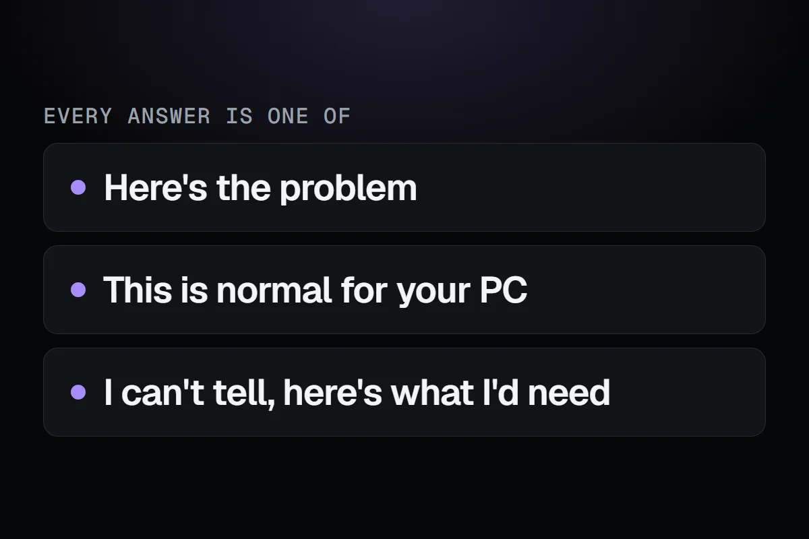

The AI journey, part 2 of 5
Bringing AI back, with rules this time
Nine days after removing Riggy, I started on a real AI helper. Before writing any of it, I wrote down what it would never be allowed to do.

The short version
The new helper is a real AI that explains your PC's records and never changes anything by itself. Only the results of look-ups it asks for leave the PC, and each kind of data has a switch. It's still in testing.
Riggy taught me what didn't work. A helper with answers written ahead of time is only filling in a form. If RigSight was going to answer questions, it needed a real AI, one that can read your records and say something it wasn't told to say.
On 17 October I started planning one. Here is the idea, in the words I wrote down that day. A helper which understands the system better than the user, to tell them easily what the issue is, or that it lacks the information to say.
That last part is the important bit.
Three kinds of answer
Every answer from the helper is meant to be one of three things.
- Here's the problem. One plain sentence, then why, then what to do about it.
- This is normal for your PC. Because a lot of worry is about things that are fine.
- I can't tell, and here's what I'd need. For example, start RivaTuner before the game and ask again, so there's frame data to look at.
The third kind is the one I care about most. An AI that always has an answer will sometimes make one up. I would much rather it said "I don't have enough to go on" and told you how to get it.
It explains, you decide
The helper never changes anything on your PC by itself. It can tell you what's likely wrong and what to try, and show you the chart or the crash it's talking about. Some answers come with a button, like opening the right Windows settings screen, scanning a drive or closing an app that's stuck. Nothing happens until you press it. A tool that reads your crash history shouldn't be able to uninstall your graphics driver because it thinks that's a good idea.
What leaves your PC
This was the reason Riggy went. A real AI means either a big download or your data going to a server. So the design starts from the question of what gets sent.
The AI model doesn't get your history. It gets a set of look-ups it can ask for, like this crash, temperatures for that day, what changed last week, how this game ran. The app runs each look-up on your PC and sends back only its result.
Your Windows user name is never sent. Neither are the names of your own files. There is one place where folder names do go. If you ask what's filling up a drive, the AI gets that drive's biggest folders, so it can tell a Steam library from a Downloads folder. Even then, your own user folder is sent as "your user folder", and the files inside are described only by their kind and size.
Every page of RigSight the AI can look at has its own switch in Settings, for Crashes, Temperatures, Games, Storage and the rest. Switch off Storage and no drive or folder is ever sent. If you turn one off and then ask about it, the AI is told it isn't shared, and it tells you which switch to turn on. Under each answer, a short line shows which of your records it looked at, and each one opens the page it came from.
Off means gone
Two more rules came from watching how other apps handled AI.
Turning the helper off hides every Ask and Explain button in the app. They disappear completely. People get rightly annoyed by AI buttons they can't remove.
And RigSight doesn't contact the AI service at all until you choose it and ask a question. Opening Settings doesn't count. Starting the app doesn't count. Nothing checks in by itself.
Where it shows up
You can ask from a small window that floats over any page. But the place I think it'll help most is next to problems RigSight already shows. An opened crash has an "Explain this crash" button, so you get the helper's take on that exact crash, with everything RigSight recorded around it.
It's also meant to talk like a friend who knows PCs. Someone who just had a game crash will type "why did this crash?", not a carefully worded question. A casual question gets a casual answer, and numbers only show up when they help.
The helper is being tested now. I'm not giving it a date. When it's ready, the privacy page will say exactly what it sends before anyone can use it. The next posts are about how it's being built, covering where the answers come from, picking the model and testing it on PCs that don't exist.